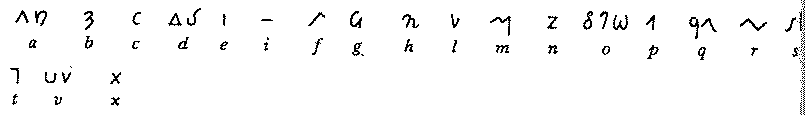
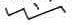
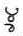
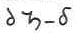
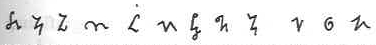

International
InternationalStarożytny Rzym
Zapis skrótowy.
Konieczność zachowywania w formie dokumentalnej ważnych z punktu widzenia prawa i polityki wydarzeń pozwoliła na narodziny zawodu skryby - zawodowego pisarza. Do pracy tej szkolono często niewolników, u których stwierdzono odpowiednie zdolności. Skrybowie, z początku na własny użytek, lecz później także drogą wymiany doświadczeń, opracowali skuteczny system skrótowego zapisu. Metody te dają się opisać jako:
- kontrakcja (dr = doktor), ściśnięcie, z reguły pierwsza i ostatnia litera wyrazu, czasem jeszcze środkowa,
- suspensja (inż. = inżynier, A.D. = Anno Domini), odcięcie końca lub (rzadziej) początku wyrazu, użycie pierwszych liter wyrazów,
- brachygrafia (oC = stopni Celsjusza, ale też „:-)” jako uśmiech), użycie skrótu jak wyrazu, lub zmiana znaczenia przez dodawanie różnych znaczków diakrytycznych,
- abrewiacja (pekape = Polskie Koleje Państwowe, OO = ojcowie), użycie specjalnych symboli lub pochodnych skrótów dla oddania złożonego sensu,
- ligatura (Æ = AE, & = i), sklejanie liter w prostszy znak przenoszący ich połączone brzmienie.
Według świadectwa dziejopisarza, biskupa Sewilli Izydora (?-636 r.n.e.), niejaki Enniusz Kwintus Gramatyk (prawdopodobnie helleńskiego pochodzenia) zgromadził, czy też stworzył ponad 1000 skrótów zwanych notae vulgares czyli popularnych, używanych powszechnie. Były to skróty takie jak SPQR (Senatus Populusque Romanus), NB (nota bene, do dziś używane). Wymyślił także metody dla rozróżniania płci w skrótach, tj. litery skrótów określających płeć żeńską zwrócone były w kierunku od prawej do lewej (np. F=filius, syn, F_zwrócone_w_lewo=filia, córka); opisania liczby mnogiej przez podwojenie (np. PP - patres, jak współcześnie w dokumentach kościelnych OO=ojcowie). Współcześni badacze uważają, że Enniusz Kwintus przede wszystkim zgromadził i usystematyzował skróty alfabetyczne, które były w użyciu przez pierwsze 200 lat rozwoju państwa rzymskiego, rozwijane przez sekretarzy przeróżnych instytucji, a którymi ci wymieniali się poprzez urzędowe pisma. W ten sposób stworzył grunt pod stenograficzny zapis Tyrona, jako formę bardziej dojrzałą i o niebo bardziej efektywną.
Noty tyrońskie
Marcus Tullius Tiro
Wynalazek pierwszego systemu typowo stenograficznego przypisuje się Markowi Tuliuszowi Tyronowi, sekretarzowi-wyzwoleńcowi, Marka Tuliusza Cycerona. Opracował on na własne potrzeby uproszczone znaki i przy ich pomocy zapisywał mowy swego pana, a później bliskiego przyjaciela.
Marcus Tullius Tiro wydał zbiór systematyczny swojego systemu pod nazwą Commentarii notarum tironianarum, jak tytułowano ten dokument w średniowiecznych odpisach. Dożył stuletniej starości w miejscowości Puteola (dziś Pozzoli, czy też Pozzuoli )

Sprzysiężenie Katyliny (63 r.p.n.e.)
Katylina konkurował z Cyceronem o urząd konsula. Jak zapisano u Plutarcha, Cyceron zwołał senatorów do świątyni Jowisza Statora, gdzie wygłosił pierwszą z oracji katylińskich, mowę znaną pod łacińskim tytułem Oratio in Catilinam Prima in Senatu Habita. Znamy ją dziś w całości, gdyż, jak twierdzą historycy, zapisywało ją czterdziestu1 velocissimos scribae, lub clerici, uczonych w piśmie szybkopisów. Korzystając z okazji Cyceron zaprezentował niesamowity potencjał zapisu stenograficznego.
Wiadomo także z Plutarcha, z Żywotów sławnych mężów, tom drugi, o życiu Katona, że podczas obrad Senatu nad sprawą Katyliny, pracowali też szybkopisowie:
Mówią, że z mów Katona zachowała się tylko ta jedna, dzięki Cyceronowi, który swych sekretarzy wyróżniających się szybkością pisania nauczył znaków mających w małych i krótkich formach wyrażać treść wielu liter i rozmieścił ich tu i ówdzie w sali posiedzeń senatu. Przedtem jeszcze nie uczono i nie posiadano tak zwanych „znakopisów„. Dopiero wtedy, jak mówią, stawiano w tym pierwsze kroki.
Obrady protokołowano na sposób zwany później logografią, tzn. pierwszy szybkopis łapał strzęp wypowiedzi, np. zdanie, a następny natychmiast zaczynał pisać kolejne. I tak aż do końca szeregu, o ile to było konieczne, kiedy znowu zaczynał pierwszy.
Cztery lata później, w 59 r.p.n.e., stenografowie weszli na stałe do biur senackich, a efekty ich pracy złożyły się na Acta Senatus. To właśnie dzięki stenografom tak wiele nam dziś wiadomo o Starożytnym Rzymie.
Właściwie powinno się ich nazywać tachygrafami, gdyż pojęcie stenografii w tamtych czasach jeszcze nie istniało.
Tyrońscy tachygrafowie w senacie rzymskim
Notae Tironianae
Noty tyrońskie były systemem ściśle stenograficznym. Wiadomo, że równolegle był w użyciu uproszczony alfabet pisany zwany singulariae lub notae literae, służący do bieżącego pisania pełnych słów. Tymczasem noty tyrońskie obfitowały w tysiące symboli skrótowych, których przybywało z każdym wiekiem.
Samemu Tyronowi badacze przypisują około 200 znaków pierwotnych systemu, które uzupełniano pismem kursywnym.

Można przypuszczać, że pierwsze znaki systemu tyrońskiego opisywały raczej frazeogramy, niż krótkie słowa, bo na cóż by się miała przydać taka początkująca stenografia?
Przykład not tyrońskich
Wiadomo z pewnością, że noty tyrońskie miały swoich poprzedników. Zachował się przekaz o zapisie Enniusza Kwintusa (który mógł być Grekiem). Zapewne poszczególne wielkie rzymskie rody posiadały własne zręby zapisu stenograficznego, który mógł być również wykorzystywany jako szyfr wewnętrzny.
Jednocześnie zachowały się przekazy, że wszelkie ważniejsze posiedzenia czy to urzędów, sądów, czy rad odbywały się z udziałem urzędników, którzy ich przebieg rejestrowali na bieżąco, pracując na zmianę, zdanie po zdaniu - ten sposób był wykorzystywany także w średniowieczu, kiedy stenografia nie była w powszechnym użyciu.

Niektóre znaki tyrońskie pozostały w użyciu do dziś. Powyżej widać przykład słowa et, który spotkać można w napisach w języku gaelickim w Irlandii.
Protektor Tyrona zginął w efekcie błędnych wyborów politycznych. Do władzy dorwały się młode wilki z otoczenia Oktawiana Augusta Cezara, ale oni także docenili wartość szybkopisania.
Po Tyronie zapisali się inni stenografowie, jak Wipsaniusz Filargo, wyzwoleniec Agryppy, czy Aquila, wyzwoleniec Mecenasa, którzy dalej rozwijali ten system. Badacze oceniają, że w momencie powstania liczyły sobie około 2000 znaków.
Seneka (Lucjusz Anneusz Seneka 3 r.p.n.e.-65 r.p.n.e.), który sam był stenografem, zdecydował o zamrożeniu systemu. W tym czasie miał on już 3000 znaków.
Notariat
Zaprzysiężonych do notowania urzędowych wydarzeń stenografów nazywano NOTARIUSZAMI. Pracowników notariatu dzielono na: notarii (zwanych też cursores i semiografos), którzy pracowali zespołowo, by zapisać słowa mówione, librarii (lub amanuensi), czyli urzędników, którzy przepisywali księgi, ale też stenograficzne zapiski notariuszy, exeptores, czyli urzędników sądowych odpowiedzialnych zarówno za stenografię, jak i przepisanie stenogramów do akt sądowych, które mogły zostać odczytane przez piśmiennych. Wszelkie zapisy zazwyczaj (od wynalezienia not tyrońskich) prowadzono stenograficznie. Stenografia weszła do użytku także w gospodarce i wojskowości - wszędzie tam zatrudniano niewolników-sekretarzy szkolonych w szybkim pisaniu. Do zapisywania ważniejszych spraw brano sądowych exeptores (tak się narodził zawód notariusza). Za błędy lub oszustwa popełnione podczas stenografowania urzędowego w Rzymie obowiązywały surowe kary:
Eum notarium, qui falsum causae breve in consilio imperatoris retulisset, (Severus) incisis digitorum nervis, ita ut nunquam posset scribere, deportavit.
Temu notariuszowi, co umyślnie wystawił fałszywe świadectwo w zapisie posiedzenia Imperialnej Rady (Sewerowi), uciąć ścięgna nadgarstkowe i wypędzić.
(tłumaczenie moje, proszę poprawić)
Odnośniki w rzymskiej poezji:
O stenografii wspomina Marcjalis, Epigram CCVIII, tom 14, Notarius:
„Currant verba licet, manus est velocior illis,
Nondum lingua suum, dextra peregit opus.”
„Choć słowa pędzą skoro, dłoń jest od nich szybsza;
Nim język się zatrzymał, prawica zakończyła swoją pracę.”
Nondum lingua suum, dextra peregit opus. - Stało się to zawołaniem nowożytnych stenografów.
Seneka, Epistola IX:
„Quid loquar verborum notas,
quibus, quamvis citata excipitur oratio,
et celeritatem liguoe manus sequitur?
Vilissimorum mancipiorum ista commenta sunt.”
„Cóż mam powiedzieć o znakach dla słów,
przez które, jak szybko by nie przemawiać,
dłoń nadąży za językiem?
Oto wynalazek pogardzanych niewolników.”
Manilius, Astronomica, tom 4 chwali Fortunę za to, że urodził się pod znakiem Panny:
„Hic et scriptor erit felix,cui litera verbum est,
Quique notis linguam superet, cursumque loquentis.
Excipiet longas nova per compendia voces.”
„Szczęśliwy pisarz,dla którego litera jest słowem,
Przez swe zapiski prześciga język i prędkość mowy.
Podejmie się zapisać długie zdania przy pomocy nowych skrótów.”
(Nieznaczne różnice z transkrypcją z książki Gustawa Sarpa “Prolegomena ad tachygraphiam romanam” )
Hic et scriptor erit velox, cui litera verbum est,
Quique notis linguam superet, cursimque loquentis.
Excipiat longas nova per compendia voces.
W hymnie z okazji śmierci Kasjanusa, który został zadźgany przez swoich uczniów przy pomocy rysików (stylusów) jako broni, Prudentius, poeta z IV w.n.e. tak opisuje nauczyciela stenografii:
„Praefuerat studiis puerilibus, et grege multo
Septus magister literarum sederat
Verba notis brevibus comprendere cuncta paratus
Raptimque punctis dicta praepetibus sequi.”
„Mistrz szkoły przewodził młodzieńczym studiom
I zasiadł otoczony przez tłumek gotowych zapisać
Wszystkie słowa skrótami i prędko nadążyć
Za przemówieniem w każdym jego podpunkcie.”
Auzoniusz Wielki poświęcił jej cały poemat.
Przykład not tyrońskich wedle J.Gumińskiego
Notae iuris
Noty tyrońskie zrewolucjonizowały proces administracyjny i legislacyjny, ale nie wszyscy, a konkretnie prawnicy właśnie, uważali je za najdoskonalsze narzędzie. Pokazały one, że wyrazu nie trzeba zapisywać ani fonetycznie, ani ortograficznie, co w tym rejonie świata stanowiło pewną nowość. Otworzyły drogę do przekazu przez przeróżne skróty wyrazowe, często bliskie ideogramom.
W tym miejscu duży udział miały rękopisy prawnicze. Geneza zapisu jurydycznego sięga prawdopodobnie II w.n.e. W V w.n.e. noty prawnicze mają już dojrzałą postać (tak twierdzą fachowcy). Powstały głównie ze skrótowania i dodawania znaków diakrytycznych w różnych niespodziewanych miejscach, np.
- C' = cum
- H' = hoc
- P' = post
- T' = tur
Oprócz apostrofów stosowano kropki, przekreślenia prostą i wężykiem, supraskrybcyjne kreski skośne, poziome oraz małe literki.
- P~i~ = pri
- Q~a~ = qua
- Q~i~ = qui
- T~m~T = testamentum
Nie wachano się dołączać liter alfabetu greckiego oraz w ograniczonym stopniu not tyrońskich, wszystko, aby jak najbardziej skrócić proces pisania, a jednocześnie nie uczynić sztuki zbyt zawiłą, gdyż jurysta winien umieć coś więcej, poza sprawnym (i prawnym) pisaniem.
Noty prawnicze nigdy nie dorosły do standaryzacji zapisu. Zanim to nastąpić mogło, kolejni władcy, jak cesarz Justynian w roku 534, zakazali przepisywania tekstów prawniczych skrótami, co w krótkim czasie doprowadziło do ich zaniku - a szkoda.
Notae iuris zanikły około VI-VII w.n.e. również w związku z ogólnym rozpadem systemów prawnych, administracyjnych i oświatowych na terenach opanowanych przez barbarzyńców.
Stenografia w domu i zagrodzie
Na stałe przy sobie notariusza utrzymywał Pliniusz Starszy , tą samą metodą fakt ten odnotował Pliniusz Młodszy. O cesarzu Gajuszu Juliuszu Cezarze Oktawianie Auguście (przełom tysiącleci) zapisano, że założył ponad 300 szkół stenografii. Cesarz Dioklecjan sam był synem notariusza i ustanowił państwowy mecenat nad studiami stenografii.
Noty tyrońskie na początku naszej ery przeżywały szczyt popularności. Używane były wszędzie, zarówno w urzędach państwowych, sądach, jak i w prywatnej przedsiębiorczości. Zaznaczyć należy, że równolegle istniało pismo zwane notae singulariae lub notae literae, które można uznać za protoplastę późniejszej kursywy czyli pisma odręcznego (mniej więcej). Zatem nie wszyscy potrzebowali i musieli uczyć się trudnej sztuki szybkopisania. W większości wypadków była to domena wyspecjalizowanych, zawodowych pisarzy. Sztuki tej uczyli się jednak również najwybitniejsi intelektualiści, politycy i wojskowi epoki, na własny użytek. Jednak noty tyrońskie znajdowały najszersze zastosowanie w kręgach urzędowych i politycznych. Cesarz Tytus Flawiusz ścigał się w szybkości pisania ze swoimi sekretarzami. Na stałe przy sobie utrzymywali notariuszy Marek Antoniusz (238-244), cesarze Aurelian (270-275), Dioklecjan (284-305), aż wreszcie i Konstantyn Wielki , dzięki czemu zachowało się wiele dokumentów z okresu przenosin stolicy Cesarstwa do Konstantynopola, gdzie wkrótce ustanowił stałe biuro stenograficzne. W okresie panowania cesarza Konstantyna notariusze zyskali sobie pozycję w hierarchii urzędniczej dorównującą trybunom, pełniącym w Rzymie rolę sędziów. Jego krewniak, Julian Apostata , utrzymywał przy sobie notariuszy przez całą dobę. Słynął z pracowitości i obyczaju pracy do późnych godzin, kiedy wciąż dyktował przemówienia do Senatu lub rozprawy filozoficzne.
Uważa się, że z usług stenografów mógł korzystać Święty Paweł podczas pisania listów do mieszkańców miast greckich (np. list do Kolosan został podyktowany Tychikowi, a transkrybował go Onesimus).
Nomina sacra
Innym, choć marginalnym rozdziałem wczesnej stenografii były nomina sacra, czyli brachygraficzne skróty stosowane w pismach religijnych. Źródła tego zapisu szukano jeszcze w Biblii i innych tekstach żydowskich, gdzie obawiano się stawiać na papirus imienia Pana - lecz wcześnie temu zaprzeczono i uznano, że wraz z notae iuris jest to wynalazek chrześcijański. W rzeczywistości mogło mieć to silny związek z techniką pisania powszechną w ojczyźnie chrześcijaństwa (i nie tylko), czyli w Izraelu. Pismo hebrajskie, już wówczas znane i używane, należy bowiem do grupy alfabetów dziś zwanych abdżadami, w których normalną praktyką jest zapisywanie tylko (lub przede wszystkim) spółgłosek. W ten sposób zatem brachygraficzne skróty dla imion boskich, zaimportowaną z pisma hebrajskiego metodą szyfrowano przez usunięcie samogłosek (IHVH). Wkrótce jednak częściej używane słowa doczekały się jeszcze większego skrócenia - skoro ich miano było oczywiste dla wszystkich, to czemu nie? Tendencja ta przeniosła się na greckie tłumaczenie Biblii zwane Septuaginta , a następnie rozszerzyła na wiele imion (Jedyny, wszak w Trójcy), w tym Matki Boskiej, cech boskich i tajemnic wiary. Dla oznaczenia skrótu stawiano ponad nim poziomą kreskę, która w przyszłości stanie się symbolem konktrakcji, czyli skrótu polegającego na zapisaniu pierwszych i ostatnich liter wyrazu. I tak KYPIOC (kyrios) zapisywano KC lub KPC, XPICTOC jako XC, itp. Metoda ta przeniosła się także do łaciny i w ten sposób DS znaczyło DEUS, SPS - SPIRITUS, DMS lub DNS - DOMINUS 2, a nawet DNS N jako DOMINUS NOSTER. Wkrótce zastosowanie kontrakcji rozszerzyło się też na funkcje kościelne (DIACS = DIACONUS, EPS = EPISCOPUS).
Ponieważ pisaniem tekstów sakralnych i świeckich coraz częściej zajmowali się ci sami skrybowie, metody z nomina sacra, notae iuris oraz notae tironianae zmieszały się ze sobą tworząc niejednolity, ale skuteczny zbiór metod możliwie szybkiego pisania dla pozostałości po Imperium Romanum.
Okres chrześcijański
Stopniowy upadek cywilizacji rzymskiej nie spowodował jednoczesnego wygaśnięcia sztuki szybkiego pisania. Chrześcijanie już w samych początkach uznali ją za bardzo użyteczne narzędzie. Dowodem niech będą kontrakcje tyczące się typowo chrześcijańskiej materii i znane powszechnie do dziś:
- I.N.R.I - Iesus Nasareus Rex Iudeorum
- R.I.P. - Requiescat In Pacem
A więcej na ten temat w rozdziale Średniowiecze.
Św. Bazyli powiedział, że „słowa mają skrzydła”, więc tym bardziej konieczne jest zapisywanie słów tych, którzy oddali życie za wiarę. W roku 93 papież Klemens I ustanowił siedmiu notariuszy delegowanych specjalnie do notowania słów męczenników. Pamiętajmy, że męczeństwo za wiarę stanowi najszybszą drogę do uświęcenia. Kościół od samego początku uważał zatem, że należy dokumentować wszelkie akty męczeństwa. Dzięki wysiłkom chrześcijańskich notariuszy, w XVIIw. jezuici mogli rozpocząć pracę nad stworzeniem Acta Sanctorum. Oto przykładowa relacja (na podst. Acta Santorum, Aug., V, 12):
Na początku IV w.n.e. pewien młody katechumen, niejaki Genezjusz (dziś św. Genezjusz z Arles , patron m.in. notariuszy, sekretarzy i sekretarek), zatrudniony na stanowisku notariusza w magistracie miasta Arelate (jak je drzewiej nazywano), wykonywał swoją pracę podczas oficjalnego odczytania dekretu o prześladowaniu chrześcijan. To, co usłyszał, sprawiło, że cisnął na podłogę swój tablet i rysik, po czym oddalił się. Wkrótce został ujęty i stracony zgodnie z aktualną procedurą. W ten sposób przeszedł chrzest we własnej krwi. Kult narodził się niemal natychmiast po jego śmierci. Ołtarz poświęcony św. Genezjuszowi w kościele jego imienia w Arles datuje się na IV w.n.e.

Święty Genezjusz po prawej
Chrześcijańscy stenografowie ryzykowali więcej od swoich współwyznawców - publikowanie pism oznaczało zdemaskowanie. Tak zginął święty Kasjan , zakłuty stylusami przez swoich niechrześcijańskich uczniów. Został w ten sposób patronem stenografów.
Św. Hieronim ze Strydonu był sekretarzem papieża Damazego I. Przypisuje mu się autorstwo 6000 (słownie: sześciu tysięcy) książek i listów (sic!). Dokonał też sztuki tłumaczenia Starego Testamentu w taki oto sposób: Rabin odczytywał pismo po hebrajsku, a św. Hieronim na gorąco je stenografował (czy też: tachygrafował) po łacinie. To tłumaczenie znane jest do dziś pod nazwą Wulgata.
Z usług tachygrafów korzystały synody, począwszy od Soboru Nicejskiego, który odbył się w 325 roku w Bitynii (sic!), Sirmium (351r.), Rimini (359r.), Efezie (431r.). Sobór w Akwilei zwołany na rok 381 dla pokonania herezji ariańskiej dwóch iliryjskich biskupów, Palladiusza i Sekondiusza, pozostawił szczególnie ciekawe dla historyków dokumenty, gdyż notowali tam stenografowie różnych wyznań chrześcijańskich.
Podczas synodu w Kartaginie , w 411r.n.e. liczne kontrowersje i intrygi , jakie tam prowadzono, w tym wokół domniemanych (wtedy domniemanych) herezji Celestiusza i Pelagiusza , wywołały potrzebę szczegółowego notowania przebiegu obrad, aby w każdej chwili móc przypomnieć, kto jakie i w jakiej sprawie zajmował stanowisko. Stąd dziś wiemy tak wiele o tym wydarzeniu. Synod ten zwołano także w celu pokonania herezji donatystycznej. W tej sprawie wypowiadał się sam święty Augustyn . Tachygrafowie zanotowali jego 60 przemówień. Pracowali w parach i mieli obowiązek przedstawić gotowy skrypt w piśmie kursywnym już dnia następnego. Ponieważ nie mogli nadążyć, biskupi złożyli propozycję przełożenia drugiej sesji obrad aż do powstania gotowych zapisów. W efekcie doszło do incydentów ze strony donatystów, którzy obawiali się, że w ten sposób katolicy chcą uniknąć debaty. W związku z tym zaproponowano odczytywanie zapisów wprost z woskowanych tabliczek, czyli tabletów, ale nie zostało to zaakceptowane.
Papież Gelazjusz (492-496) nakazał, aby każdy kleryk najpierw opanował sztukę stenografii, zanim zostanie akolitą. W ten sposób przyszykował liczne kadry kościelne gotowe służyć świeckiej władzy i na długie wieki ugruntował pozycję Kościoła w polityce i administracji.
Zorganizowane biura stenograficzne obsługiwały też kolejne synody, w Seleucji syryjskiej, i Chalcedonie, gdzie w roku 451 zgromadziło się ponad 150 biskupów. Rozsądzano spór pomiędzy kościołem ortodoksyjnym a nestorianami w sprawie świętości osoby Chrystusa. Obrady były tak burzliwe, że tachygrafowie obu stron porzucili zawodowy stoicyzm i zaczęli się okładać tabletami.
Znany z brutalności i temperamentu papież Wigiliusz (538-555) miał zwyczaj bijać swoich notariuszy, aż wreszcie raz przesadził. Oskarżony o morderstwo schronił się w Konstantynopolu, gdzie jego przeciwnik polityczny, cesarz Justynian , internował go przez ponad 8 lat.
Również następne synody i sobory były stenografowane. I tak sobór rzymski w roku 495 i 531, również sobór konstantynopolski w roku 536. W dokumentach V Soboru Ekumenicznego II Konstantynopolskiego z roku 553 powtarzają się nazwiska tachygrafów z roku 536, co stanowi jeden z dowodów na stałe ich zatrudnienie przy urzędach biskupich. Zachowały się też stenogramy laterańskiego w roku 549 zwołanego przez papieża Marcina I oraz z III Ekumenicznego Soboru Konstantynopolskiego w latach 680-681. W dokumentacji IV Soboru Konstantynopolskiego pod egidą papieża Adriana II z lat 869-870 znaleziono notatkę - oświadczenie, że ”wszystko, co tu zostało powiedziane, zostało zapisane przez biegłych tachygrafów dokładnie tak, jak oni to usłyszeli„.
Od tej pory tego typu oświadczenia zapisane w notach tyrońskich znajduje się w dokumentach wszystkich następnych synodów, soborów i konwokacji aż do roku 1869, czasu I Soboru Watykańskiego, którego stenograficzną obsługę zapewniał zespół 23 kleryków różnych narodowości. Specjalnie do tego celu nauczono ich włoskiego systemu Taylora-Delpino zmodyfikowanego na zamówienie Watykanu przez zawodowego stenografa Parlamentu Subalpejskiego, dona Virginio Marchesi. Tachygrafowie pracowali parami, każda po 5 minut. Interesujące jest, że każdy z nich zapisywał co drugie wypowiedziane zdanie. Wiadomo, że wielu biskupów było bardzo poruszonych faktem, iż ich przemówienia spisywane są słowo w słowo. W latach 1962-1965, podczas II Soboru Watykańskiego, w biurze stenograficznym pracowało 30 kleryków. Pisali metodą DEK (Deutsche Einheitskurzschrift , Zunifikowany System Niemiecki) specjalnie na ich użytek zaadaptowaną przez profesora Alojzego Kennerknechta z Uniwersytetu w Mainz.
Spadek popularności stenografii
Uważa się, że spadek popularności stenografii, jaki nastąpił u schyłku cywilizacji rzymskiej, wynikał z rozwoju pisma jako takiego: pojawiło się pismo kursywne, łatwiejsze do wyuczenia, bardziej stałe w przeciwieństwie do ciągle zmieniających się systemów stenograficznych.
Były także przyczyny natury urzędowej. Niespójność i dynamika rozwoju not tyrońskich spowodowała, że pojawiały się wątpliwości interpretacyjne przy odczycie aktów prawnych. W związku z tym coraz częściej zakazywano stosowania czystego zapisu stenograficznego w jurydycznych kodeksach. Pierwszy zakaz wszedł w życie w roku 483, za rządów cesarza Teodozjusza II. Dotyczył Acta Senatus. Od tej pory stenogramy miały być natychmiast transkrybowane na zapis kursywny.
Cesarz Justynian żyjący w latach 482-565, znany reformator prawa rzymskiego, już w pierwszym swoim kodeksie nakazał, aby akty prawne przechowywano w wersji alfabetycznej, w tym zakazał wszelkich symbolizacji i skrótów, żeby nawet po wielu latach nie było wątpliwości, co w nich jest zawarte. Wraz ze średniowieczem nadchodzi też upadek instytucji obywatelskich, a zatem i sztuki oratorskiej, zatem zmniejsza się zapotrzebowanie na zapisywanie przemówień.
Z mody również wyszło uprawianie nauk, zatem coraz mniej ludzi odczuwało potrzebę korzystania z zapisu - upadek piśmiennictwa pociągnął za sobą upadek stenografii.
Upadek nie oznaczał całkowitego zaniku, a jedynie wyjście z powszechnego
użycia. Na dworach Merowingów i Karolingów stenografowie pracowali w
biurach spraw zagranicznych. Stosowano tam, obok tradycyjnego zapisu
stenograficznego, uproszczoną formę not tyrońskich, pozwalającą na
pisanie sylabami, a nie symbolami wyrazów.
I tak na przykład, zamiast stenograficznej formy słowa
”municipium„ - „mpum” ,
pisano „mu-ni-ci-pium”  ,
,
zamiast skróconej „dotio” czyli ”donatio„ ,
pisano „do-na-tio” .
Papież
Sylwester II
podpisywał się
„Silvester Gerberus” czyli
.
Taki zabieg upraszczający tachygrafię był
konieczny, ponieważ łacina stopniowo przestawała być naturalnym językiem
lokalnej i państwowej administracji, a stawała się językiem obcym i
wreszcie - martwym. Bez doskonałej znajomości języka nie ma mowy o
pełnej stenografii. Istotny spadek popularności stenografii opartej o
noty tyrońskie ustala się na XIw. A zatem, skoro karierę zaczęły w
I w.p.n.e., służyły z powodzeniem Europie przez prawie 12 wieków.
-
Skąd wiemy, że czterdziestu? W pracy badacza starożytności Herculano Francisco Dourado, A TRANSPOSIÇÃO DO TEXTO FALADO PARA O TEXTO ESCRITO OS LIMITES DO REVISOR NO DISCURSO PARLAMENTAR, w rozdziale 1.3 Definição de Taquigrafia e sua origem stoi napisane (str 26-27): Um fato importante e de destaque para o surgimento da taquigrafia foi a criaçao do primeiro departamento taquigráfico parlamentar, com o serviço taquigráfico para tomada do discurso de Catao (63 d.C.), organizado por Cícero, com a presença de cerca de quarenta velocíssimos escreventes, entre eles o próprio Tiro. Veja, ainda, a manifestaçao de Giuseppe Aliprandi sobre as Notas Tironianas, no art. II primo27 Gabinetto stenografico parlamentar (apud CURY, Rivista Sapere, Milao, 30 de novembro de 1937-XVI)
W wolnym tłumaczeniu:
Szczególnie ważny jest fakt utworzenia pierwszego biura stenografii parlamentarnej przez Cycerona dla zapisania mowy Katona (63 p.n.e) w liczbie czterdziestu szybkopisów wliczając w to Tyrona. Zobacz jeszcze pracę Giuseppe Aliprandi w sprawie Not Tyrońskich art. II primo 27 Gabinet stenografii parlamentarnej (cytowany przez CURY, Rivista Sapere, Mediolan, 30 listopada 1937-XVI) ↩︎
-
Czyżby kolejna gra słowna nadinteligentnych twórców Internetu? Co “rządzi” siecią? Otóż DNS czyli Domain Name System. Ale skrót ten można tłumaczyć też jako Pan Nasz, czyli DOMINUS. ↩︎
2010-02-09 autor: Krzysztof Smirnow